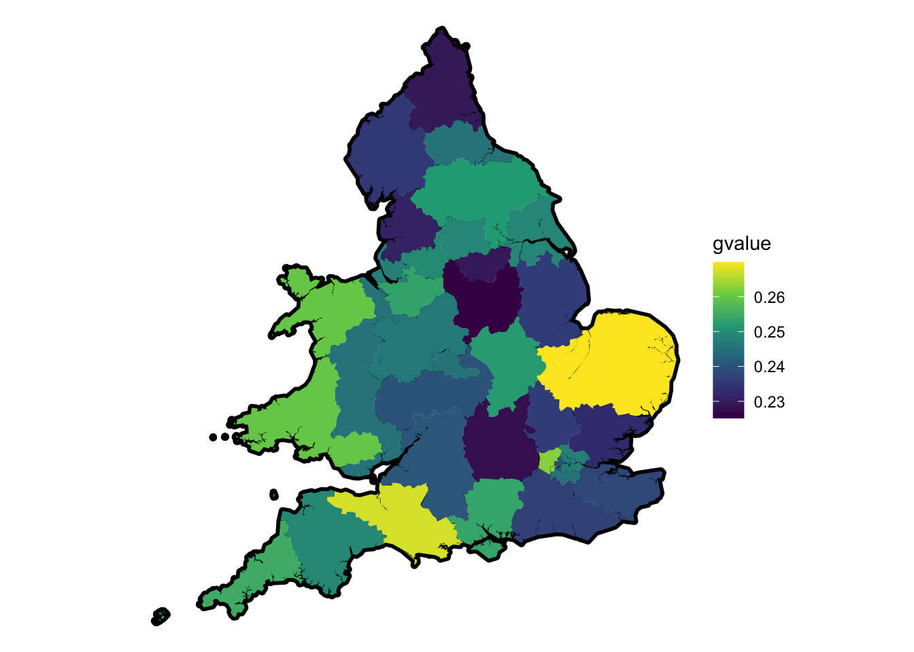
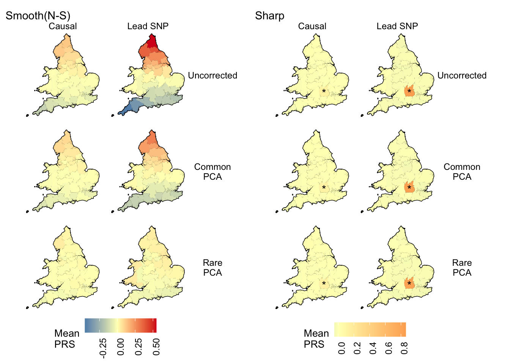
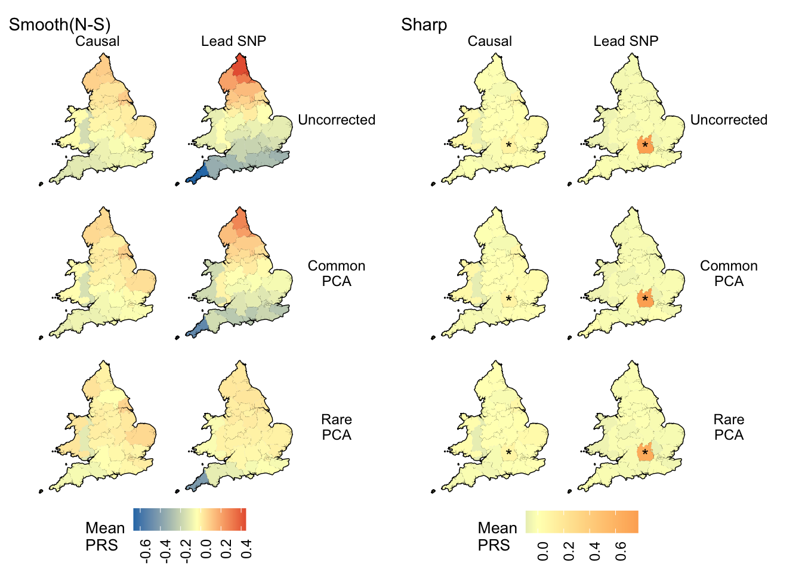

Last updated: 2020-12-22
Checks: 6 1
Knit directory: popstruct_scripts/
This reproducible R Markdown analysis was created with workflowr (version 1.6.2). The Checks tab describes the reproducibility checks that were applied when the results were created. The Past versions tab lists the development history.
The R Markdown is untracked by Git. To know which version of the R Markdown file created these results, you’ll want to first commit it to the Git repo. If you’re still working on the analysis, you can ignore this warning. When you’re finished, you can run wflow_publish to commit the R Markdown file and build the HTML.
Great job! The global environment was empty. Objects defined in the global environment can affect the analysis in your R Markdown file in unknown ways. For reproduciblity it’s best to always run the code in an empty environment.
The command set.seed(20201202) was run prior to running the code in the R Markdown file. Setting a seed ensures that any results that rely on randomness, e.g. subsampling or permutations, are reproducible.
Great job! Recording the operating system, R version, and package versions is critical for reproducibility.
Nice! There were no cached chunks for this analysis, so you can be confident that you successfully produced the results during this run.
Great job! Using relative paths to the files within your workflowr project makes it easier to run your code on other machines.
Great! You are using Git for version control. Tracking code development and connecting the code version to the results is critical for reproducibility.
The results in this page were generated with repository version 99813ec. See the Past versions tab to see a history of the changes made to the R Markdown and HTML files.
Note that you need to be careful to ensure that all relevant files for the analysis have been committed to Git prior to generating the results (you can use wflow_publish or wflow_git_commit). workflowr only checks the R Markdown file, but you know if there are other scripts or data files that it depends on. Below is the status of the Git repository when the results were generated:
Ignored files:
Ignored: .DS_Store
Ignored: .Rproj.user/
Ignored: Archived/
Ignored: analysis/.DS_Store
Ignored: burden_msprime/.DS_Store
Ignored: burden_msprime/generate_burden/.DS_Store
Ignored: data/.DS_Store
Ignored: data/burden_msprime/
Ignored: data/burden_msprime2/
Ignored: data/gwas/
Ignored: data/ukmap/
Ignored: gwas/.DS_Store
Ignored: gwas/grid/.DS_Store
Ignored: gwas/grid/tau-9/.DS_Store
Ignored: gwas/grid/tau-9/scripts/.DS_Store
Ignored: gwas/grid/tau-9/scripts/generate_genotypes/.DS_Store
Ignored: gwas/grid/tau-9/scripts/gwas/.DS_Store
Ignored: gwas/grid/tau100/.DS_Store
Ignored: gwas/grid/tau100/scripts/.DS_Store
Ignored: gwas/grid/tau100/scripts/generate_genotypes/.DS_Store
Ignored: gwas/grid/tau100/scripts/gwas/.DS_Store
Ignored: gwas/ukb/.DS_Store
Ignored: gwas/ukb/scripts/.DS_Store
Ignored: optimize_migration_rate/.DS_Store
Ignored: optimize_migration_rate/complex_dem/.DS_Store
Ignored: optimize_migration_rate/grid/.DS_Store
Ignored: output/plots/
Ignored: pca_plots/.DS_Store
Ignored: prs/.DS_Store
Ignored: prs/grid/.DS_Store
Ignored: qqplots/.DS_Store
Ignored: qqplots/fixed_effects/.DS_Store
Ignored: qqplots/lmms/.DS_Store
Ignored: revisions/.DS_Store
Ignored: shared_scripts/gwas/
Ignored: shared_scripts/prs/
Ignored: shared_scripts/simphenotype/
Ignored: sib_analysis/.DS_Store
Ignored: sib_analysis/complex_dem/.DS_Store
Ignored: sib_analysis/grid/.DS_Store
Ignored: sib_analysis/grid/tau100/mates/
Ignored: simulating_genotypes/.DS_Store
Ignored: simulating_genotypes/grid/.DS_Store
Ignored: simulating_phenotypes/.DS_Store
Untracked files:
Untracked: analysis/biasvaccuracy_prsascertainment.Rmd
Untracked: analysis/biasvaccuracy_prsascertainment.nb.html
Untracked: analysis/plotting_prs_sib_effects.Rmd
Untracked: analysis/plotting_prs_sib_effects.nb.html
Untracked: analysis/plottingprs_distribution_gridt.Rmd
Untracked: analysis/plottingprs_distribution_gridt.nb.html
Untracked: analysis/plt_burden_association.Rmd
Untracked: analysis/plt_ukb_unrelated_prs.Rmd
Untracked: analysis/plt_ukb_unrelated_prs.nb.html
Untracked: analysis/prs_wt_finemapping.Rmd
Untracked: analysis/prs_wt_finemapping.nb.html
Unstaged changes:
Modified: analysis/_site.yml
Modified: analysis/index.Rmd
Modified: burden_msprime/plt_burden_association_t100.Rmd
Modified: burden_msprime/plt_burden_association_t100.nb.html
Deleted: revisions/figuring_out_prediction_accuracy.Rmd
Deleted: revisions/figuring_out_prediction_accuracy.nb.html
Deleted: revisions/figuring_out_prediction_accuracy2.Rmd
Deleted: revisions/figuring_out_prediction_accuracy2.nb.html
Note that any generated files, e.g. HTML, png, CSS, etc., are not included in this status report because it is ok for generated content to have uncommitted changes.
There are no past versions. Publish this analysis with wflow_publish() to start tracking its development.
Here, I’ll be plotting the spatial distribution of polygenic scores based on effect sizes estimated from a GWAS in a population with a deme arrangement that looks like a map of Britain.
I did the analyses with two different sampling distributions:
library(ggplot2)
library(dplyr)
Attaching package: 'dplyr'The following objects are masked from 'package:stats':
filter, lagThe following objects are masked from 'package:base':
intersect, setdiff, setequal, unionlibrary(data.table)
Attaching package: 'data.table'The following objects are masked from 'package:dplyr':
between, first, lastlibrary(rprojroot)
library(patchwork)
library(sf)Linking to GEOS 3.8.1, GDAL 3.1.4, PROJ 6.3.1library(sp)
#specify root of the directory
F = is_rstudio_project$make_fix_file()
options(dplyr.summarise.inform=FALSE) Load ‘pop’ file, which contains deme identity, longitude, and latitude information for each individual.
#load some shared reference files
#load file containing population information for each individual and their longitude/latitude info
pop.test=fread(F("data/gwas/ukb/popfiles/ukb_ss500_d35.uniform.pop"))
#pop.test$FID=pop.test$IID=paste("tsk_",seq(1,17999,2),sep="")
#load the genetic value
gvalue_df = fread(F("data/gwas/ukb/test/genos_ukb_l1e7_ss500_m0.08_uniform_chr1_20.rmdup.train.all.gvalue.sscore.gz"))
colnames(gvalue_df) = c("rep","IID","dosage","gvalue")
gvalue_df = gvalue_df[,c('rep','IID','gvalue')]
gvalue_df2 = merge(gvalue_df,pop.test,by="IID")
gvalue_df.mean = gvalue_df2%>%
group_by(deme,longitude,latitude)%>%
summarise(gvalue=mean(gvalue))Load the true genetic values for each individual.
#load the genetic value
gvalue_df = fread(F("data/gwas/ukb/test/genos_ukb_l1e7_ss500_m0.08_uniform_chr1_20.rmdup.train.all.gvalue.sscore.gz"))
colnames(gvalue_df) = c("rep","IID","dosage","gvalue")
gvalue_df = gvalue_df[,c('rep','IID','gvalue')]
gvalue_df2 = merge(gvalue_df,pop.test,by="IID")
gvalue_df.mean = gvalue_df2%>%
group_by(deme,longitude,latitude)%>%
summarise(gvalue=mean(gvalue)/sd(gvalue))Read a map of Britain and plot the true mean genetic values for each deme.
#read uk map
nc<-st_read(F("data/ukmap/NUTS_Level_2_January_2015_Full_Clipped_Boundaries_in_England_and_Wales//NUTS_Level_2_January_2015_Full_Clipped_Boundaries_in_England_and_Wales.shp"))Reading layer `NUTS_Level_2_January_2015_Full_Clipped_Boundaries_in_England_and_Wales' from data source `/Users/Azaidi/Documents/gwas_bias2/popstruct_scripts/data/ukmap/NUTS_Level_2_January_2015_Full_Clipped_Boundaries_in_England_and_Wales/NUTS_Level_2_January_2015_Full_Clipped_Boundaries_in_England_and_Wales.shp' using driver `ESRI Shapefile'
Simple feature collection with 35 features and 5 fields
geometry type: MULTIPOLYGON
dimension: XY
bbox: xmin: 82672 ymin: 5337.901 xmax: 655604.7 ymax: 657534.1
projected CRS: OSGB 1936 / British National Grid#transform to same coordinate system as UKB data (OSGB1936)
nc2<-st_transform(nc,27700)
nc2.simple = st_simplify(nc2,preserveTopology = TRUE,dTolerance = 1000)
nc2.simple = merge(nc2.simple,gvalue_df.mean,by.x="nuts215cd",by.y="deme")
nc3.simple = st_union(nc2.simple)
ggplot()+
geom_sf(data=nc3.simple,
color="black",size=2)+
geom_sf(data=nc2.simple,
aes(fill=gvalue),
color="transparent")+
scale_fill_viridis_c()+
theme_void()+
theme(plot.margin = margin(0, 0, 0, 0, "cm"))
Write function that will do the following:
1: First,load the predicted polygenic scores based on effect sizes that are: (i) causal and have a pvalue of 5e-04 or smaller (named ‘causal’) (ii) the topmost significant SNP (‘lead SNP’) within each 100Kb window around the causal variant with the condition that the lead SNP has a pvalue of 5e-04 or smaller.
2: Load each individual’s true genetic value and subtract it out of the polygenic score. This is important because there might be some structure in the genetic value itself because of the simulated demography and we are only interested in any residual structure due to residual stratification.
For visualization, plot the mean polygenic score per deme. The mean averages out stochastic noise in the polygenic score, making systematic patterns more apparent.
Plot.
fmake_plots= function(pheno,sampling = "uniform",plot_title){
#lead the polygenic scores
#prs1=fread(here(paste("gwas/complex_dem/test/prs/complexdem_prs_",pheno,".all.c.sscore.gz",sep="")))
prs2=fread(F(paste("data/gwas/ukb/test/prs/ukbdem_prs_",pheno,".all.",sampling,".c.p.sscore.gz",sep="")))
prs3=fread(F(paste("data/gwas/ukb/test/prs/ukbdem_prs_",pheno,".all.",sampling,".nc.sscore.gz",sep="")))
colnames(prs2)=colnames(prs3)=c("rep","IID","dosage_sum","pcs0","cm","re")
#prs1$ascertainment = "all_causal"
prs2$ascertainment = "causal_p"
prs3$ascertainment = "lead_snp"
#rbind polygenic scores and add spatial information
prs_df=rbind(prs2,prs3)
prs_df=merge(prs_df,pop.test,by="IID")
#add genetic value to prs dataframe
prs_df = merge(prs_df, gvalue_df, by=c("rep","IID"))
#melt to long format
mprs_df=melt(prs_df%>%
select(-c(dosage_sum)),
id.vars=c("rep","IID","gvalue","ascertainment","deme","longitude","latitude"),
variable.name="correction",
value.name="prs")
#remove cmre for now
mprs_df = mprs_df%>%
filter(correction!="cmre")
#remove variation due to simulated genetic value
#also calculate the correlation between prs and longitude/latitude
mprs.adj = mprs_df%>%
group_by(rep,correction,ascertainment)%>%
mutate(prs.adjusted = prs-gvalue,
prs.adjusted = (prs.adjusted - mean(prs.adjusted))/sd(prs.adjusted))%>%
ungroup()
#calculate mean prs adjusted for each deme
mprs.sum = mprs.adj%>%
group_by(correction,ascertainment,deme,longitude,latitude)%>%
summarize(mean.prs = mean(prs.adjusted))%>%
ungroup()
#calculate mean of rlat and rlong across reps
# mprs.r = mprs.adj %>%
# group_by(correction,ascertainment)%>%
# summarize(rlat = mean(rlat),
# rlong = mean(rlong))%>%
# ungroup()
labels_prs=c(
causal_p="Causal",
lead_snp="Lead SNP",
pcs0="Uncorrected",
cm="Common\nPCA",
re="Rare\nPCA",
cmre="Common +\nrare"
)
prs_midpoint = mean(mprs.sum$mean.prs)
mprs.sum = merge(nc2.simple,mprs.sum,by.x="nuts215cd",by.y="deme")
if(pheno=="smooth"){
plt_prs_phe=ggplot() +
geom_sf(data=nc3.simple,
color="black",size=0.5)+
theme_bw()+
geom_sf(data = mprs.sum,
aes(fill = mean.prs),
color="transparent",
show.legend = T)+
facet_grid(correction ~ ascertainment,
labeller=as_labeller(labels_prs)) +
scale_fill_gradient2(high = "#d7191c",
mid = "#ffffbf",
low = "#2c7bb6",
midpoint = prs_midpoint)+
labs(title=plot_title, fill="Mean\nPRS")+
theme_void()+
theme(plot.title=element_text(size=11),
strip.text = element_text(size=9),
panel.grid = element_line(color="transparent"),
legend.text=element_text(size=9,angle=90,hjust=1),
legend.title = element_text(size=10),
legend.key.size = unit(5, "mm"),
legend.position="bottom",
legend.background = element_blank(),
plot.background = element_blank(),
strip.background = element_blank())
}
if(pheno == "sharp"){
plt_prs_phe = ggplot() +
geom_sf(data=nc3.simple,
color="black",size=0.5)+
theme_bw()+
geom_sf(data = mprs.sum,
aes(fill = mean.prs),
color="transparent",
show.legend = T)+
facet_grid(correction ~ ascertainment,
labeller=as_labeller(labels_prs)) +
scale_fill_gradient2(high = "#fdae61",
mid = "#ffffbf",
low = "#2c7bb6",
midpoint = prs_midpoint)+
labs(title=plot_title, fill="Mean\nPRS")+
theme_void()+
theme(plot.title=element_text(size=11),
strip.text = element_text(size=9),
panel.grid = element_line(color="transparent"),
legend.text=element_text(size=9,angle=90,hjust=1),
legend.title = element_text(size=10),
legend.key.size = unit(5, "mm"),
legend.position="bottom",
legend.background = element_blank(),
plot.background = element_blank(),
strip.background = element_blank()) +
annotate(geom="text",
x=462513, y=202620, label = "*", vjust = 0.7)
}
return(plt_prs_phe)
}Residual stratification
plts_smooth1 = fmake_plots("smooth","uniform","Smooth(N-S)")
plts_sharp1 = fmake_plots("sharp","uniform","Sharp")
plts_smooth1 + plts_sharp1
Now repeat the analysis when individuals are sampled non-uniformly across space.
#load some shared reference files
#load file containing population information for each individual and their longitude/latitude info
pop.test=fread(F("data/gwas/ukb/popfiles/ukb_ss500_d35.weighted.pop"))
#pop.test$FID=pop.test$IID=paste("tsk_",seq(1,17999,2),sep="")Load the true genetic values for each individual.
#load the genetic value
gvalue_df = fread(F("data/gwas/ukb/test/genos_ukb_l1e7_ss500_m0.08_weighted_chr1_20.rmdup.train.all.gvalue.sscore.gz"))
colnames(gvalue_df) = c("rep","IID","dosage","gvalue")
gvalue_df = gvalue_df[,c('rep','IID','gvalue')]
gvalue_df2 = merge(gvalue_df,pop.test,by="IID")
gvalue_df.mean = gvalue_df2%>%
group_by(deme,longitude,latitude)%>%
summarise(gvalue=mean(gvalue)/sd(gvalue))Plot!
plts_smooth1 = fmake_plots("smooth","weighted","Smooth(N-S)")
plts_sharp1 = fmake_plots("sharp","weighted","Sharp")
plts_smooth1 + plts_sharp1
sessionInfo()R version 4.0.3 (2020-10-10)
Platform: x86_64-apple-darwin17.0 (64-bit)
Running under: macOS Catalina 10.15.7
Matrix products: default
BLAS: /Library/Frameworks/R.framework/Versions/4.0/Resources/lib/libRblas.dylib
LAPACK: /Library/Frameworks/R.framework/Versions/4.0/Resources/lib/libRlapack.dylib
locale:
[1] en_US.UTF-8/en_US.UTF-8/en_US.UTF-8/C/en_US.UTF-8/en_US.UTF-8
attached base packages:
[1] stats graphics grDevices utils datasets methods base
other attached packages:
[1] sp_1.4-4 sf_0.9-6 patchwork_1.0.1 rprojroot_1.3-2
[5] data.table_1.13.2 dplyr_1.0.2 ggplot2_3.3.2 workflowr_1.6.2
loaded via a namespace (and not attached):
[1] tidyselect_1.1.0 xfun_0.19 purrr_0.3.4 lattice_0.20-41
[5] colorspace_1.4-1 vctrs_0.3.4 generics_0.1.0 htmltools_0.5.0
[9] viridisLite_0.3.0 yaml_2.2.1 rlang_0.4.8 R.oo_1.24.0
[13] e1071_1.7-4 later_1.1.0.1 pillar_1.4.6 glue_1.4.2
[17] withr_2.3.0 DBI_1.1.0 R.utils_2.10.1 lifecycle_0.2.0
[21] stringr_1.4.0 munsell_0.5.0 gtable_0.3.0 R.methodsS3_1.8.1
[25] evaluate_0.14 labeling_0.4.2 knitr_1.30 httpuv_1.5.4
[29] class_7.3-17 Rcpp_1.0.5 KernSmooth_2.23-17 promises_1.1.1
[33] scales_1.1.1 backports_1.1.10 classInt_0.4-3 farver_2.0.3
[37] fs_1.5.0 digest_0.6.27 stringi_1.5.3 grid_4.0.3
[41] tools_4.0.3 magrittr_1.5 tibble_3.0.4 crayon_1.3.4
[45] pkgconfig_2.0.3 ellipsis_0.3.1 rmarkdown_2.5 rstudioapi_0.11
[49] R6_2.5.0 units_0.6-7 git2r_0.27.1 compiler_4.0.3